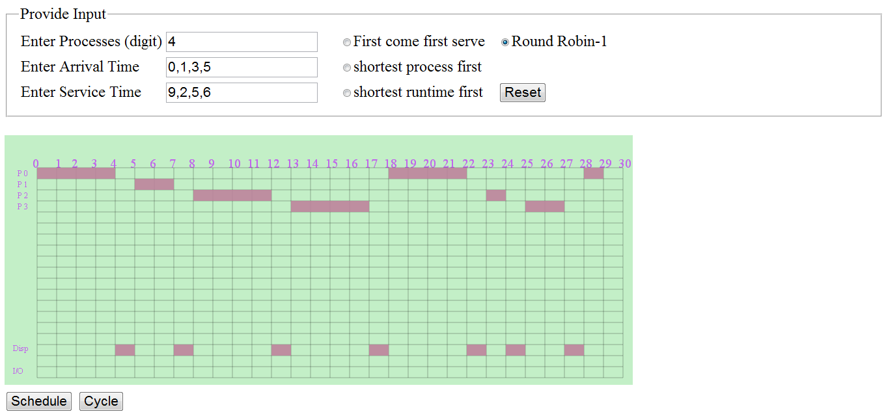

It is similar to FCFS with preemption added.Round-Robin Scheduling is also called
as time-slicing scheduling and it is a preemptive version based on a clock. That is a clock
interrupt is generated at periodic. When the interrupt occurs, the currently running process is
placed in the ready queue and the next ready job is selected on a First-come, First-serve basis.
This process is known as time-slicing, because each process is given a slice of time before
being preempted.
One of the following happens:The process may have a CPU urst of less than the time quantum or
CPU burst of currently executing process be longer than the time quantum. In this case the a
context switch occurs the process is put at the tail of the ready queue.
|
|
 |